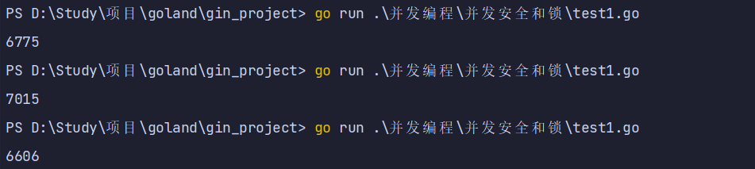
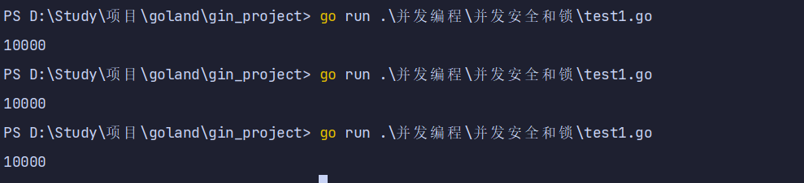
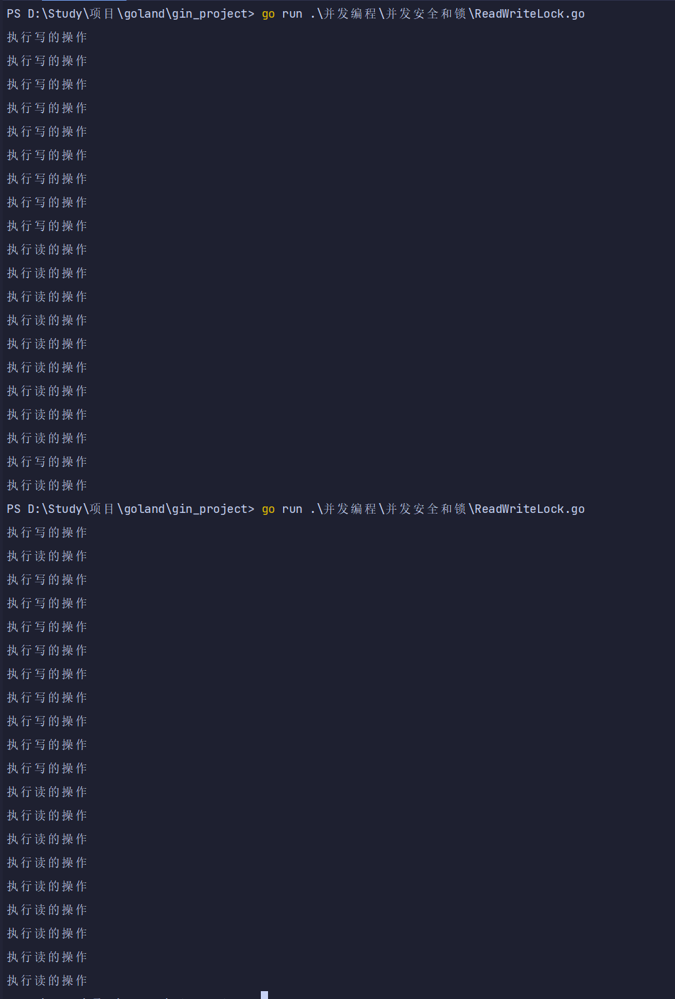
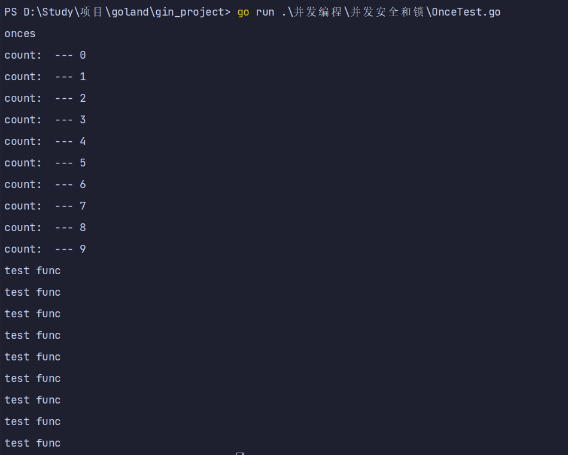
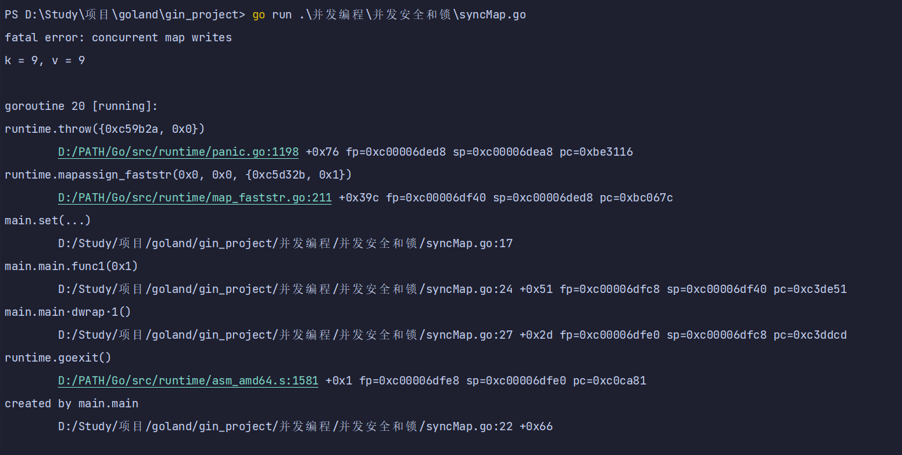
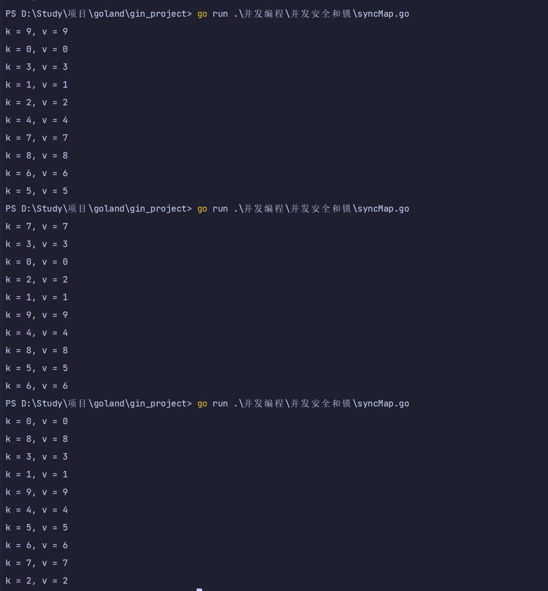

1. 并发安全与锁
1.1. 并发安全
- 有时候在Go代码中可能会存在多个goroutine同时操作一个资源（临界区），这种情况会发生竞态问题（数据竞态）。
- 类比现实生活中的例子有十字路口被各个方向的的汽车竞争；还有火车上的卫生间被车厢里的人竞争。
- 下面开启两个协程，对变量x加一操作，分别加5000次，理想结果是10000，实际三次结果都不相同
package main
import (
"fmt"
"sync"
)
var x int64
var wg sync.WaitGroup
func add() {
for i := 0; i < 5000; i++ {
x = x + 1
}
wg.Done()
}
func main() {
wg.Add(2)
go add()
go add()
wg.Wait()
fmt.Println(x)
}

1.2. 互斥锁
- 互斥锁是一种常用的控制共享资源访问的方法，它能够保证同时只有一个
goroutine可以访问共享资源。 - Go语言中使用
sync包的Mutex类型来实现互斥锁。 - 使用互斥锁来修复上面代码的问题：
package main
import (
"fmt"
"sync"
)
var x int64
var wg sync.WaitGroup
var lock sync.Mutex
func add2() {
for i := 0; i < 5000; i++ {
lock.Lock()
x = x + 1
lock.Unlock()
}
wg.Done()
}
func main() {
wg.Add(2)
go add2()
go add2()
wg.Wait()
fmt.Println(x)
}

1.3. 读写互斥锁
- 互斥锁是完全互斥的，但是有很多实际的场景下是
读多写少的 - 当我们并发的去读取一个资源不涉及资源修改的时候是没有必要加锁的，这种场景下使用读写锁是更好的一种选择。
- 读写锁在Go语言中使用
sync包中的RWMutex类型。 - 读写锁分为两种：读锁和写锁
- 当一个goroutine获取读锁之后，其他的
goroutine如果是获取读锁会继续获得锁，如果是获取写锁就会等待； - 当一个
goroutine获取写锁之后，其他的goroutine无论是获取读锁还是写锁都会等待。
- 当一个goroutine获取读锁之后，其他的
注意：是读写锁非常适合读多写少的场景，如果读和写的操作差别不大，读写锁的优势就发挥不出来。
package main
import (
"fmt"
"sync"
"time"
)
var wg sync.WaitGroup
var mutex sync.RWMutex
//写的方法
func write() {
mutex.Lock()
fmt.Println("执行写操作")
time.Sleep(time.Second * 2)
mutex.Unlock()
wg.Done()
}
//读的方法
func read() {
mutex.RLock()
fmt.Println("---执行读操作")
time.Sleep(time.Second * 2)
mutex.RUnlock()
wg.Done()
}
func main() {
for i := 0; i < 10; i++ { //开启10个协程执行读操作
wg.Add(1)
go write()
}
for i := 0; i < 10; i++ { // 开启10个协程执行写操作
wg.Add(1)
go read()
}
wg.Wait()
}

2. sync其他方法
2.1. sync.WaitGroup
- 在代码中生硬的使用
time.Sleep肯定是不合适的，Go语言中可以使用sync.WaitGroup来实现并发任务的同步。 sync.WaitGroup有以下几个方法：
| 方法名 | 功能 |
|---|---|
| (wg * WaitGroup) Add(delta int) | 计数器+delta |
| (wg *WaitGroup) Done() | 计数器-1 |
| (wg *WaitGroup) Wait() | 阻塞直到计数器变为0 |
sync.WaitGroup内部维护着一个计数器，计数器的值可以增加和减少。- 例如当我们启动了N 个并发任务时，就将计数器值增加N。
- 每个任务完成时通过调用Done()方法将计数器减1。
- 通过调用Wait()来等待并发任务执行完，当计数器值为0时，表示所有并发任务已经完成。
- 我们利用
sync.WaitGroup将上面的代码优化一下：
package main
import (
"fmt"
"sync"
)
var wg3 sync.WaitGroup
func hello() {
defer wg3.Done()
fmt.Println("Hello Goroutine!")
}
func main() {
wg3.Add(1)
go hello() // 启动另外一个goroutine去执行hello函数
fmt.Println("main goroutine done !")
wg3.Wait()
}

2.2. sync.Once
- 在编程的很多场景下我们需要确保某些操作在高并发的场景下只执行一次，例如只加载一次配置文件、只关闭一次通道等。
- Go语言中的
sync包中提供了一个针对只执行一次场景的解决方案–sync.Once。 sync.Once只有一个Do方法，其签名如下：
package main
import (
"fmt"
"sync"
"time"
)
var once sync.Once
func onces() {
fmt.Println("onces")
}
func onced() {
fmt.Println("onced")
}
func main() {
for i, v := range make([]string, 10) {
once.Do(onces)
fmt.Println("count:", v, "---", i)
}
for i := 0; i < 10; i++ {
go func() {
once.Do(onced)
fmt.Println("test func")
}()
}
time.Sleep(1000)
}

2.3. sync.Map
- Go语言中内置的map不是并发安全的。请看下面的示例
- 下面的代码开启少量几个
goroutine的时候可能没什么问题 - 当并发多了之后执行上面的代码就会报
fatal error: concurrent map writes错误。 - 原因：
- 因为 map 变量为 指针类型变量，并发写时，多个协程同时操作一个内存
- 类似于多线程操作同一个资源会发生竞争关系，共享资源会遭到破坏
- 因此golang 出于安全的考虑，抛出致命错误：fatal error: concurrent map writes。
package main
import (
"fmt"
"strconv"
"sync"
)
var m = make(map[string]int)
func get(key string) int {
return m[key]
}
func set(key string, value int) {
m[key] = value
}
func main() {
wg := sync.WaitGroup{}
for i := 0; i < 20; i++ {
wg.Add(1)
go func(n int) {
key := strconv.Itoa(n)
set(key, n)
fmt.Printf("k=:%v,v:=%v\n", key, get(key))
wg.Done()
}(i)
}
wg.Wait()
}

- 像这种场景下就需要为map加锁来保证并发的安全性了，Go语言的
sync包中提供了一个开箱即用的并发安全版map–sync.Map。 - 开箱即用表示不用像内置的map一样使用make函数初始化就能直接使用。
- 同时
sync.Map内置了诸如Store、Load、LoadOrStore、Delete、Range等操作方法。
package main
import (
"fmt"
"strconv"
"sync"
)
var wg4 sync.WaitGroup
func main() {
var m2 = sync.Map{}
for i := 0; i < 10; i++ {
wg4.Add(1)
go func(n int) {
key := strconv.Itoa(n)
m2.Store(key, n)
value, _ := m2.Load(key)
fmt.Printf("k = %v, v = %v \n", key, value)
wg4.Done()
}(i)
}
wg4.Wait()
}
